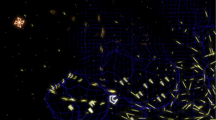
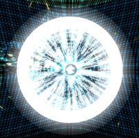
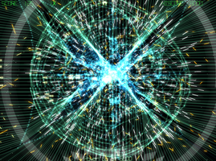

gridwars
Archivierte Anleitung
Dieser Artikel wurde archiviert, da er - oder Teile daraus - nur noch unter einer älteren Ubuntu-Version nutzbar ist. Diese Anleitung wird vom Wiki-Team weder auf Richtigkeit überprüft noch anderweitig gepflegt. Zusätzlich wurde der Artikel für weitere Änderungen gesperrt.
Zum Verständnis dieses Artikels sind folgende Seiten hilfreich:
gridwars  ist ein Spaceshooter nach dem Vorbild Geometry Wars. In gridwars fliegt man mit einem Raumschiff auf einem Gitter (engl. grid), auf dem mit der Zeit immer mehr Gegner auftauchen. Bei den Gegnern handelt es sich zumeist um geometrische Formen, die es zu zerstören gilt. Dazu hat das Raumschiff eine Bordkanone und eine begrenzte Anzahl an Bomben. Kontakt mit dem Gegner führt zur Zerstörung des Raumschiffes, dadurch verliert der Spieler ein Leben. Hat der Spieler alle Leben verloren, so ist auch das Spiel verloren.
ist ein Spaceshooter nach dem Vorbild Geometry Wars. In gridwars fliegt man mit einem Raumschiff auf einem Gitter (engl. grid), auf dem mit der Zeit immer mehr Gegner auftauchen. Bei den Gegnern handelt es sich zumeist um geometrische Formen, die es zu zerstören gilt. Dazu hat das Raumschiff eine Bordkanone und eine begrenzte Anzahl an Bomben. Kontakt mit dem Gegner führt zur Zerstörung des Raumschiffes, dadurch verliert der Spieler ein Leben. Hat der Spieler alle Leben verloren, so ist auch das Spiel verloren.
|  |  |  |
| Das namensgebende Raster | Gezündete Bombe | Rückstoß der Bombe |
Installation¶
Das Spiel befindet sich nicht in den Paketquellen, deshalb muss man zunächst das Archiv von der Homepage herunterladen  . Dann muss man das Paket an eine beliebige Stelle entpacken [1].
. Dann muss man das Paket an eine beliebige Stelle entpacken [1].
Bevor man das Spiel erfolgreich starten kann muss man jedoch noch das folgende Paket installieren [2], denn in der Standardinstallation befindet sich eine neuere Version, die jedoch nicht vom Programm genutzt wird.
libstdc++5 (universe)
 mit apturl
mit apturl
Paketliste zum Kopieren:
sudo apt-get install libstdc++5
sudo aptitude install libstdc++5
Spielen¶
Das Spiel wird über die Datei gridwars aus dem Verzeichnis gestartet [3], in das man es zuvor entpackt hat. Alternativ kann man einen Menüeintrag erstellen [4].
Konfiguration¶
Tastenkürzel¶
Da die Tastenkombinationen leicht zu konfigurieren sind und in der Standardeinstellung die Steuerung ausschließlich mit der Maus geschieht, nachfolgend eine empfohlene Konfiguration.
Zunächst wechselt man in die Einstellungen, wählt den Steuerungstyp "keyboard" aus und ändert die Tasten wie unten in der Tabelle. Danach stellt man den Steuerungstyp auf "hybrid" um, wechselt in dessen Konfiguration und wählt die Option "move: mouse - fire: keys*"
Anschließend kann das Raumschiff mit der der Maus gesteuert werden und die Schießrichtung wird mit der Tastatur geregelt. Diagonales Schießen erfordert das Drücken von zwei Tasten gleichzeitig.
| gridwars | |
| Taste(n) | Funktion |
| F3 | Rastermuster wechseln |
| W , A , S , D | Nach oben, links, unten, rechts fliegen |
 | Schießen |
,  | Bombe abwerfen |
| Esc | Zurück, Pause, Menü je nach Kontext |
Problembehebung¶
Spiel zu langsam¶
Manche Raster brauchen mehr Rechenleistung, daher hilft es oft zu einem "simpleren" Raster zu wechseln.

Infobox¶
| gridwars | |
| Originaltitel: | gridwars |
| Genre: | Arcade |
| Sprache: | |
| Veröffentlichung: | 2006 |
| Entwickler: | Marco Incitti |
| Medien: | Download |
| Läuft mit: | nativ |
- Erstellt mit Inyoka
-
 2004 – 2017 ubuntuusers.de • Einige Rechte vorbehalten
2004 – 2017 ubuntuusers.de • Einige Rechte vorbehalten
Lizenz • Kontakt • Datenschutz • Impressum • Serverstatus -
Serverhousing gespendet von